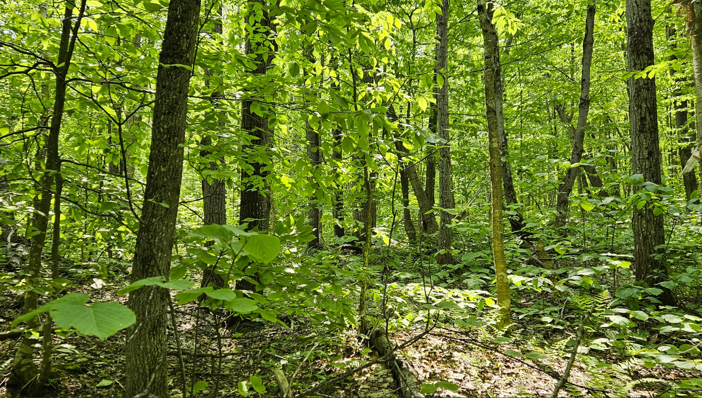
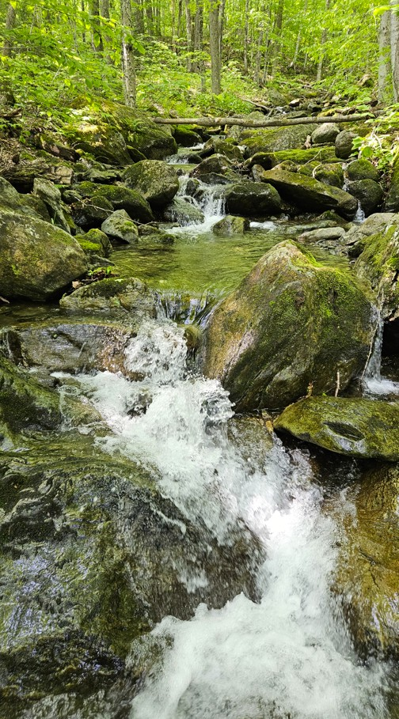

12 km de Knowlton, 30 min de Magog, 60 min de Sutton et du ski. Accès hivernal et estival via la montée Baker Pond.
Terrain de 12,8 ha, façade d’environ 145 m, zoné rural constructible selon le plan de la municipalité de 2025.


Pour plus de détails, Écris-moi.